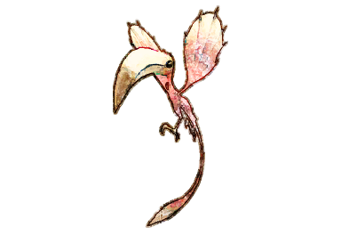
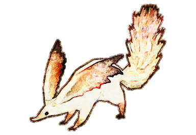
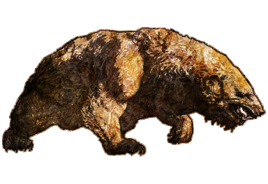
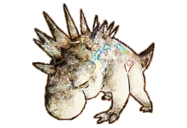

スコッグ・フリュー
Skogs Fru
中央ラノシア
Middle La Noscea
バーバステル
低地ラノシア
Barbastelle
Lower La Noscea
ダークヘルメット
西ラノシア
Dark Helmet
Western La Noscea
ブラッディ・マリー
東ラノシア
Bloody Mary
Eastern La Noscea
ミラドロッシュ
高地ラノシア
Myradrosh
Upper La Noscea

ヴオコー
外地ラノシア
Vuokho
Outer La Noscea
ホワイトジョーカー
黒衣森：中央森林
White Joker
Central Shroud

フェクダ
黒衣森：北部森林
Phecda
North Shroud

スティンギング・ソフィー
黒衣森：東部森林
Stinging Sophie
East Shroud
モナーク・オーガフライ
黒衣森：南部森林
Monarch Ogrefly
South Shroud
アヴゼン
中央ザナラーン
Ovjang
Central Thanalan
スェアーシロップ
西ザナラーン
Sewer Syrup
Western Thanalan
ガトリングス
東ザナラーン
Gatling
Eastern Thanalan

死灰のアルビン
南ザナラーン
Albin the Ashen
Southern Thanalan
不滅のフェランド闘軍曹
北ザナラーン
Flame Sergeant Dalvag
Northern Thanalan
ナウル
クルザス中央高地
Naul
Coerthas Central Highlands
リーチキング
モードゥナ
Leech King
Mor Dhona